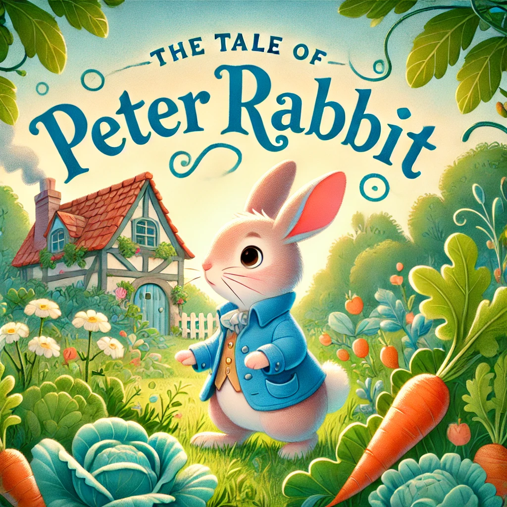

The Tale of Peter Rabbit by Beatrix Potter
In The Tale of Peter Rabbit by Beatrix Potter, mischievous Peter Rabbit ignores his mother’s warning and sneaks into Mr. McGregor’s garden. There, he feasts on delicious vegetables but soon gets into trouble when Mr. McGregor spots him. A frantic chase begins as Peter struggles to escape, losing his shoes and jacket along the way. Exhausted and scared, he finally finds his way out and returns home. His mother scolds him for his disobedience and, while his siblings enjoy a hearty supper, Peter goes to bed feeling sick from his misadventures and only gets chamomile tea.
Peter Enters Mr. McGregor's Garden

Once upon a time, there were four little rabbits – Flopsy, Mopsy, Cotton-tail, and Peter. Their mother warned them never to go into Mr. McGregor's garden because their father had an accident there. However, naughty Peter disobeyed and slipped under the gate into the garden. He was excited by the delicious vegetables and began to eat lettuces, French beans, and radishes. But suddenly, Mr. McGregor spotted him and chased after him, waving a rake and shouting, “Stop thief!” Peter was terrified and ran around the garden, losing his shoes and jacket along the way.
Peter Gets Lost and Escapes

Peter tried to find his way out but got lost among the cabbages. He encountered a cat, who watched him curiously, but Peter wisely avoided her. Frightened, he hid in a watering can but soon had to leave as it was full of water. Mr. McGregor almost caught him several times, but Peter managed to slip away each time. Finally, he found the gate and squeezed under it, escaping from the angry gardener. He ran all the way home, exhausted and frightened.
Peter Returns Home
Back home, Peter was tired and sick from eating too much in the garden. His mother put him to bed and gave him chamomile tea, while his sisters – Flopsy, Mopsy, and Cotton-tail – enjoyed a lovely supper of bread, milk, and blackberries. Peter learned his lesson about disobedience and danger but went to bed without any supper.
Lesson and Moral of The Tale of Peter Rabbit

Obedience and Listening to Parents: Peter Rabbit gets into trouble because he disobeys his mother's warning about staying away from Mr. McGregor's garden. The story teaches children the importance of listening to parents and elders, who give advice to keep them safe. Consequences of Actions: Peter faces several consequences for his disobedience – he loses his shoes and jacket, is chased by Mr. McGregor, and goes to bed without supper. This shows that actions have consequences, and making poor choices can lead to difficulties. Courage and Quick Thinking: Despite his fear and the dangerous situation, Peter finds a way to escape. This teaches children about courage, quick thinking, and perseverance when facing challenges. Learning from Mistakes: In the end, Peter is safe but learns a valuable lesson about the consequences of misbehavior. It encourages children to learn from their mistakes and make better choices in the future.